<!DOCTYPE html>
<html>
  <head>
    <title>31 35 000 Removing and Installing/Replacing Front Stabilizer — 2011 BMW 128i Coupe (E82) L6-3.0L (N52K) Service Manual | Operation CHARM</title>
    <meta name='description' content="Detailed repair manual for the 2011 BMW 128i Coupe (E82) L6-3.0L (N52K).">
    <link rel='stylesheet' href="../style.css">
    <meta name='viewport' content='width=device-width, initial-scale=1.0' />
  </head>
  <body>
    <div class='theme-colors header'>
      <div class='branding'><b>Operation CHARM</b>: Car repair manuals for everyone.</div>
<div class=breadcrumbs><a class='breadcrumb-part' href="../">Home</a> <b>&gt;&gt;</b> <a class='breadcrumb-part' href="../BMW/">BMW</a> <b>&gt;&gt;</b> <a class='breadcrumb-part' href="../BMW/2011/">2011</a> <b>&gt;&gt;</b> <a class='breadcrumb-part' href="../index.html">128i Coupe (E82) L6-3.0L (N52K)</a> <b>&gt;&gt;</b> <a class='breadcrumb-part' href="0.html">Repair and Diagnosis</a> <b>&gt;&gt;</b> <a class='breadcrumb-part' href="0.html#Steering%20and%20Suspension/">Steering and Suspension</a> <b>&gt;&gt;</b> <a class='breadcrumb-part' href="0.html#Steering%20and%20Suspension/Suspension/">Suspension</a> <b>&gt;&gt;</b> <a class='breadcrumb-part' href="1834.html">Stabilizer Bar</a> <b>&gt;&gt;</b> <a class='breadcrumb-part' href="1834.html#Service%20and%20Repair/">Service and Repair</a> <b>&gt;&gt;</b> <a class='breadcrumb-part' href="11236.html">31 35 000 Removing and Installing/Replacing Front Stabilizer</a></div></div>
<div class="theme-colors floaty-message lemon-message">
  <b style="font-size: 1.5em; color: gold">Manuals through 2025 now available!</b>
  <br><br>
  Our trusted friends have launched a new website named LEMON, which has newer manuals. It also contains all the CHARM manuals.
  <br><br>
  LEMON is the spiritual successor to  CHARM, I recommend you try it!
  <br><br>
  Link: <a style='white-space: nowrap' href="../missing-page">lemon-manuals.la</a> or <a style='white-space: nowrap' href="../missing-page">lemon-manuals.org.ua</a>
  <br><br>
  (Some people have issue connecting. LEMON is investigating. For now, use Firefox or change your DNS server)
  <br><br>
  Or, hide this message: <a href="../missing-page">temporarily</a> or <a href="../missing-page">permanently</a>
</div>
<div class='main'>
<h1>31 35 000 Removing and Installing/Replacing Front Stabilizer</h1><br><br><b>31 35 000 Removing And Installing/Replacing Front Stabilizer</b><br><br><br><div class='oxe-image'></div><br><br><br><br><br><b>IMPORTANT:</b>  To avoid complaints being made by the customer about noise (e.g. grating), set the car on its <a href="1938.html">wheels</a> and tighten down the anti-roll bar mounting to specified torque.<br><br><br><div class='oxe-image'></div><br><br><br><br><br><b>Necessary preliminary tasks:</b><br><span class='indent-2'>&#09;</span>-<span class='indent-5'>&#09;</span>Remove front underbody protection.<br><span class='indent-2'>&#09;</span>-<span class='indent-5'>&#09;</span>E84: Remove pedestrian protection as necessary.<br><span class='indent-2'>&#09;</span>-<span class='indent-5'>&#09;</span>E88: Remove left and right V-strut.<br><span class='indent-2'>&#09;</span>-<span class='indent-5'>&#09;</span>Remove anti-roll bar link on both sides from anti-roll bar.<br><br><br><div class='oxe-image'>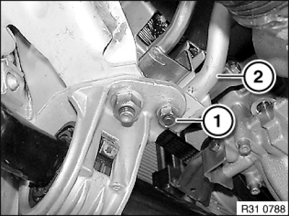</div><br><br><br><br><br>M3:<br>Remove reinforcement plate.<br>Release nut (1) for return line (2).<br>Tightening torque 32 41 11AZ.<br><br>Installation note:<br>Replace self-locking nut.<br><br><br><div class='oxe-image'>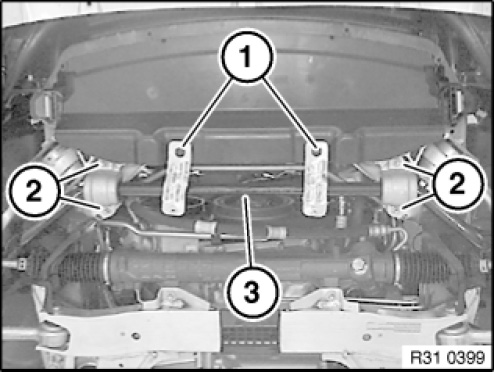</div><br><br><br><br><br>Except M3: Release screws (1) and remove brackets.<br>Release nuts (2); if necessary, grip screws after repair.<br>Remove anti-roll bar (3); if necessary, press off from front axle support with a suitable tool.<br><br>Installation note:<br>Check rubber mounts for damage, and renew rubber mounts/anti-roll bar if necessary.<br>Replace self-locking nuts (do not tighten down).<br>Set car on its <a href="1938.html">wheels</a> and tighten down nuts to tightening torque 31 35 1AZ.<br><br><br><div class='oxe-image'>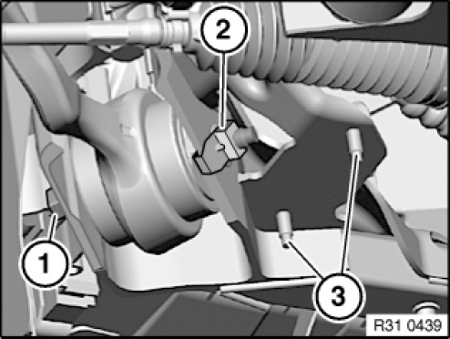</div><br><br><br><br><br><b>Repair solution for studs:</b><br>Release screw (1).<br>Tightening torque 31 12 1AZ.<br>Raise lock nut (2) in bore hole area and pull off from front axle support.<br>Drive out stud bolts (3) in upwards direction and remove/feed out through an opening in front axle support.<br><br>Installation note:<br>Insert new screws from above.<br>Replace lock nut.<br><br><br><div class='oxe-image'></div><br><br><br><br><br><b>Replacement:</b><br>Remove both rubber mounts from anti-roll bar, (except E84)<br><br><br><h3>�&deg;�:</h3><div class='oxe-image'>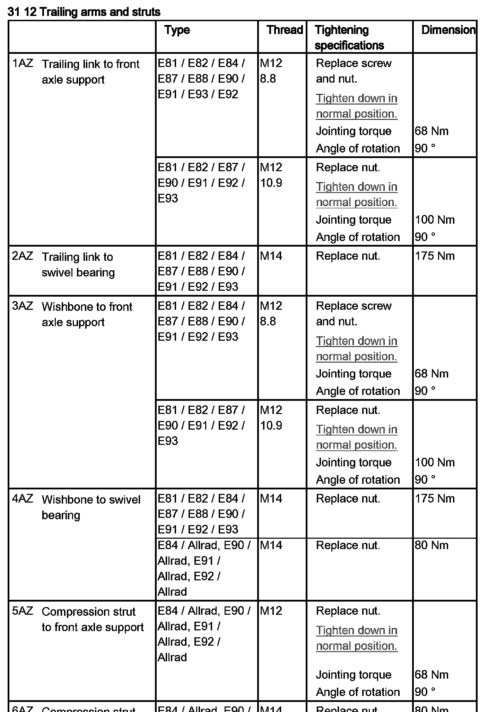</div><br><br><br><br><div class='oxe-image'>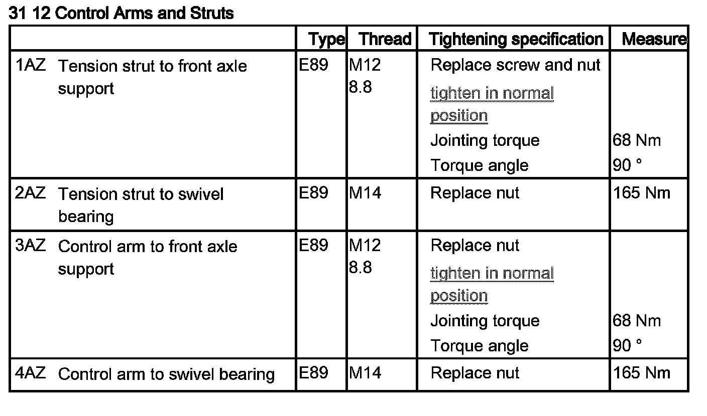</div><br><br><br><br><h3>� �:</h3><div class='oxe-image'></div><br><br><br><br><h3>0{�:</h3><div class='oxe-image'>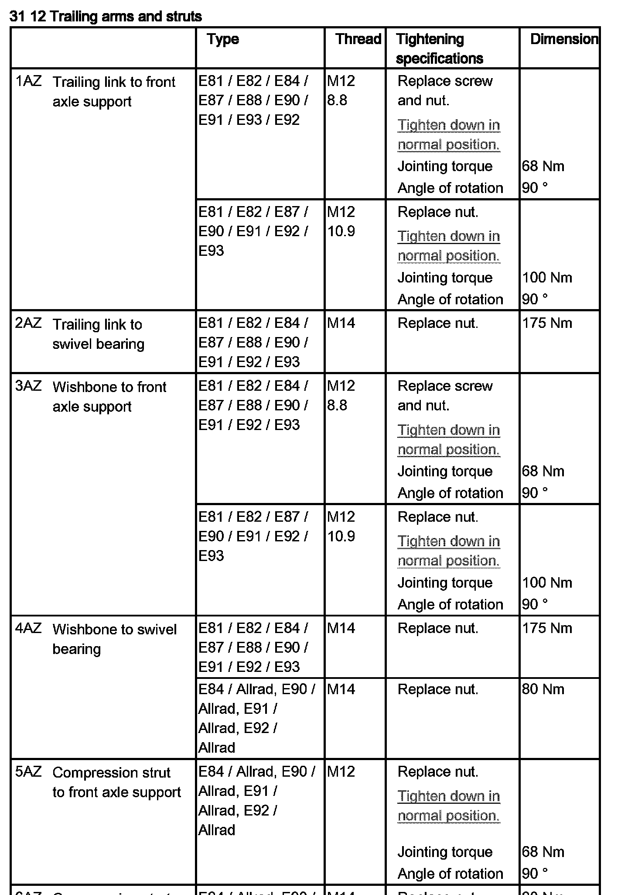</div><br><br><br><br><h3>s��:</h3><div class='oxe-image'></div><br><br><br><br><h3>50�:</h3><div class='oxe-image'></div><br><br><br><br><div class='oxe-image'>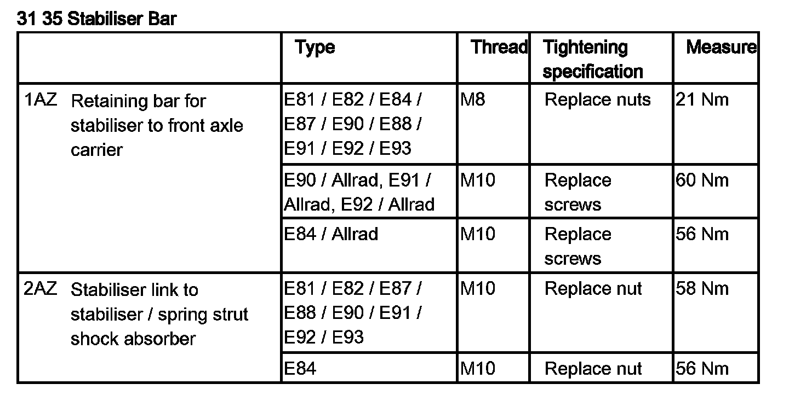</div><br><br><br><br><div class='oxe-image'>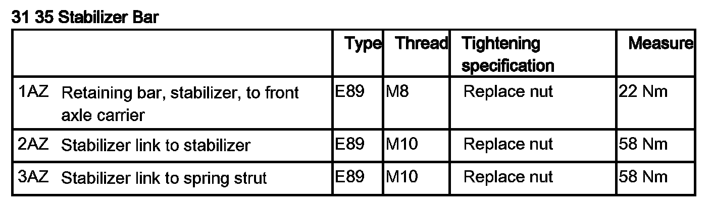</div><br><br><br><br><div class='oxe-image'>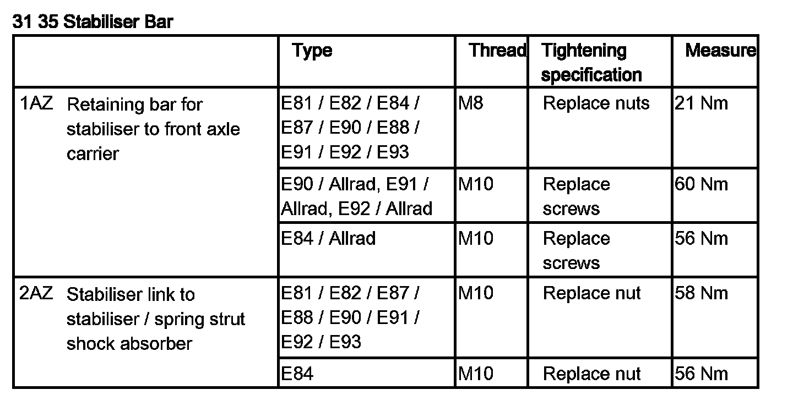</div><br><br><br><br><div class='oxe-image'>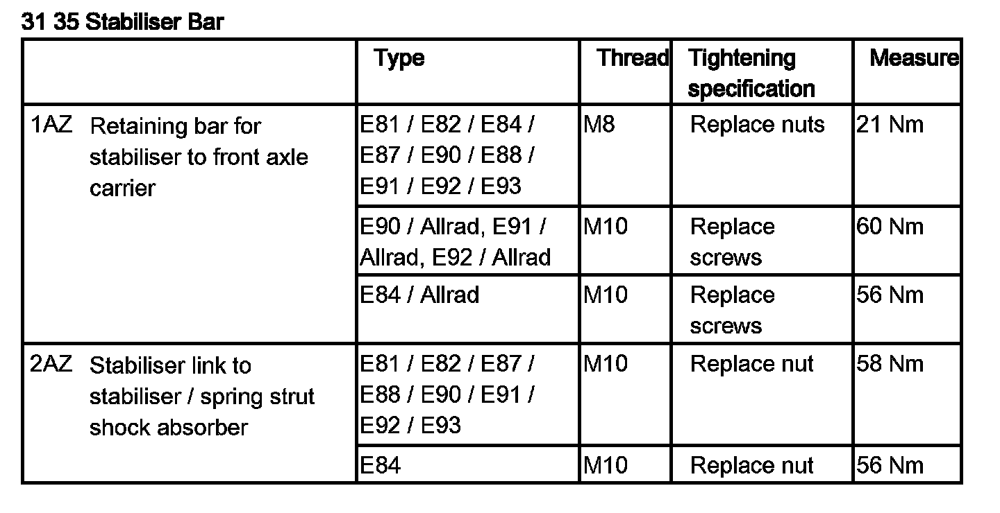</div><br><br><br><br><div class='oxe-image'>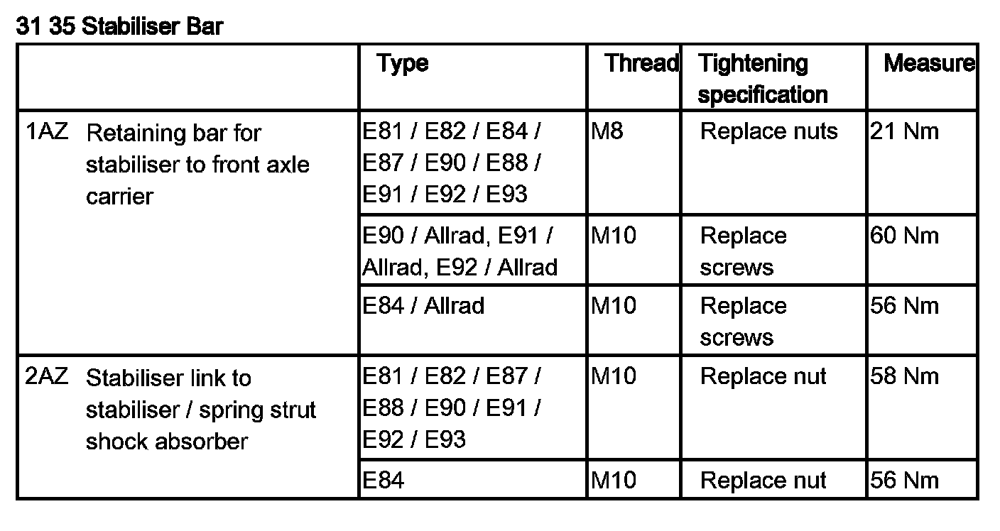</div><br><br><br><br><div class='oxe-image'>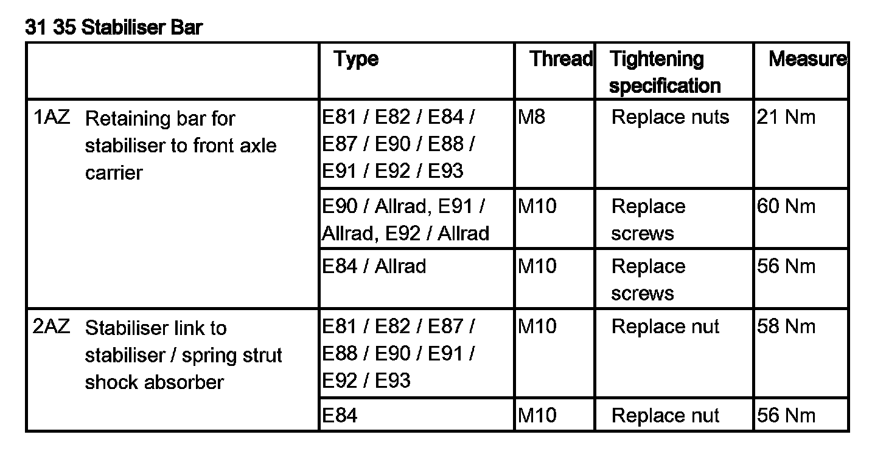</div><br><br><br><br><h3>�\�:</h3><div class='oxe-image'></div><br><br><br><br><h3>���:</h3><div class='oxe-image'>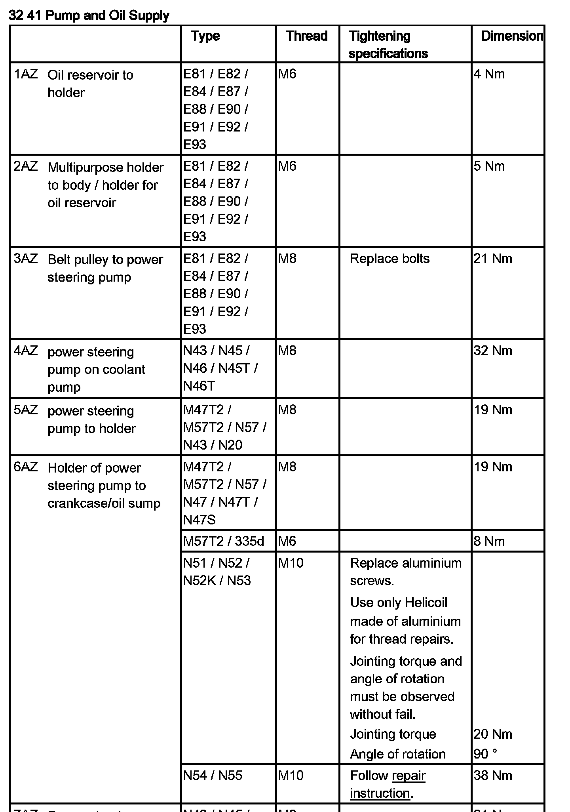</div><br><br><br><br><h3>G�:</h3><div class='oxe-image'>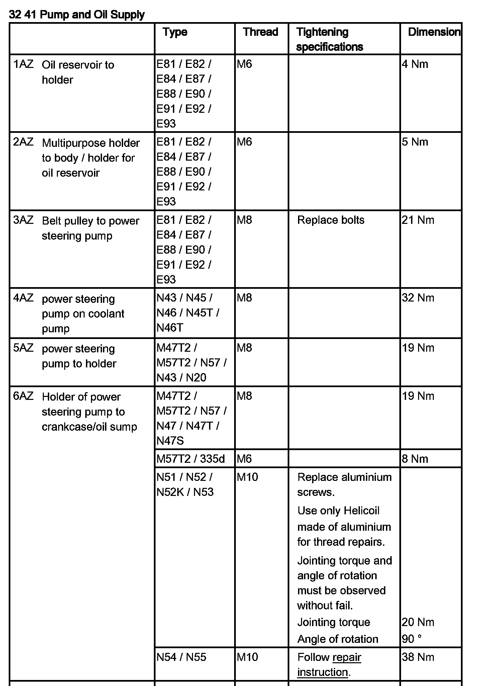</div><br><br><br><br><h3>��:</h3><div class='oxe-image'>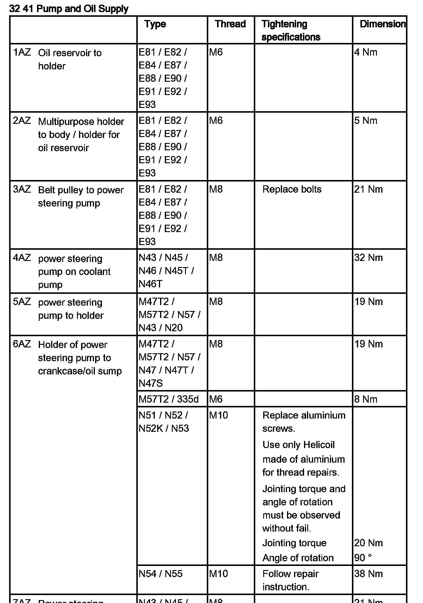</div><br><br><br><br><h3>�s�:</h3><div class='oxe-image'>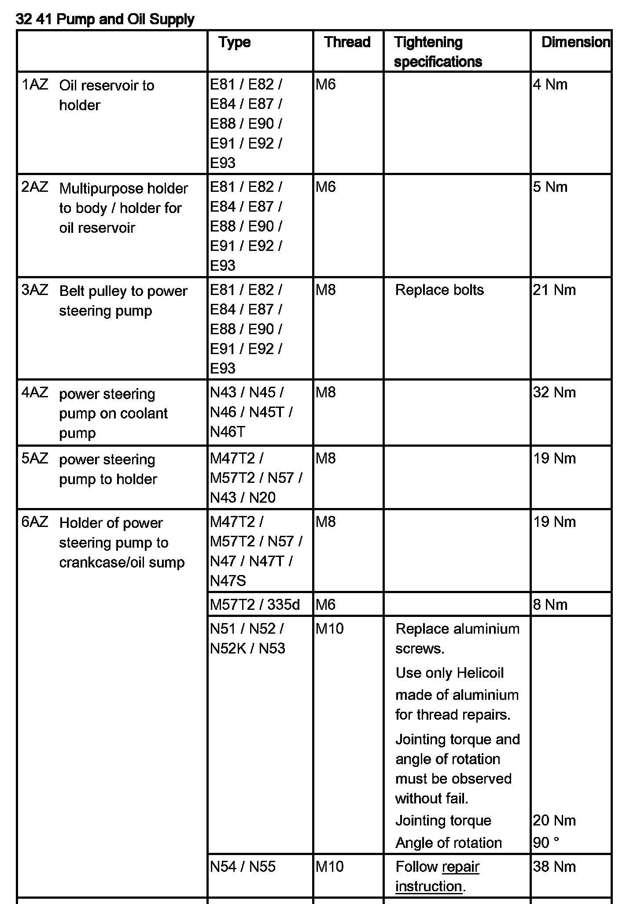</div><br><br><br><br><h3>jѬ:</h3><div class='oxe-image'>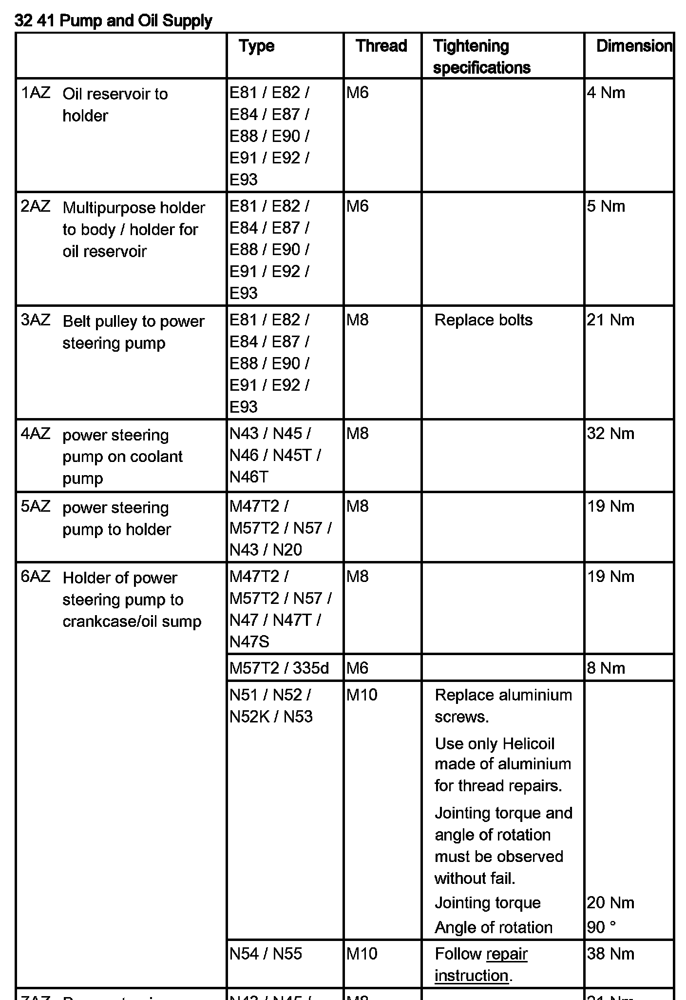</div><br><br><br></div>
<div class="theme-colors footer">
  <i>pro multis</i> · <a href="../about.html">About Operation CHARM</a>
</div>
<script src="../script.js"></script>
</body>
</html>
